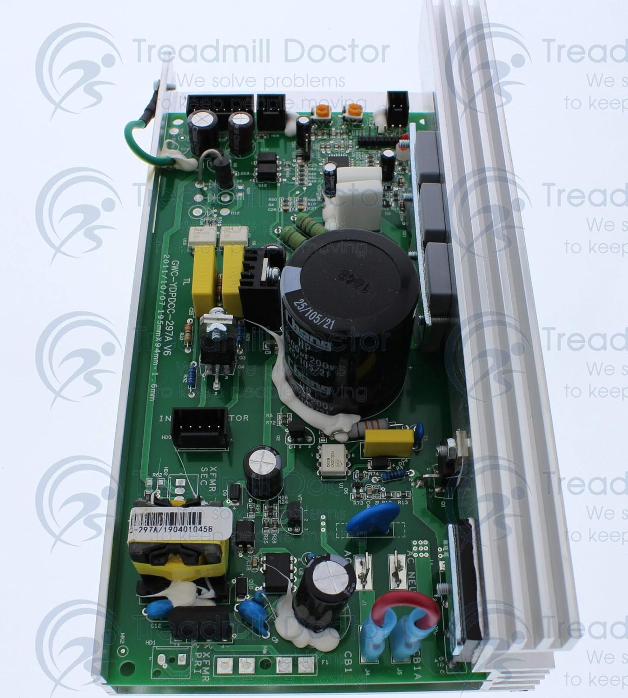

Reparación de tarjeta electrónica
para caminadoras en Puebla capital y todo el estado
¿Tu caminadora no enciende, la pantalla está muerta o huele a quemado?
El problema casi siempre es la tarjeta madre (PCB). Nosotros la reparamos donde quiera que estés en Puebla.
de las fallas en caminadoras son por la tarjeta electrónica
Por desuso (varias semanas sin encenderse), variaciones de voltaje, o porque el motor consume más amperaje del que soporta la placa original. Nosotros diagnosticamos y reparamos en tu domicilio, sin importar en qué municipio de Puebla te encuentres.
🔴 Síntomas de una tarjeta dañada
- ❌ La pantalla no muestra nada (completamente apagada)
- ❌ La caminadora no responde al botón de encendido
- ❌ Huele a quemado o plástico derretido
- ❌ Se encienden luces pero no funciona la banda
- ❌ Velocidad irregular o se para sola
- ❌ Error en display sin causa aparente
✅ Qué hacemos en la reparación
- ✔️ Diagnóstico electrónico con multímetro y osciloscopio
- ✔️ Reparación de componentes quemados (resistencias, capacitores, triacs)
- ✔️ Reprogramación de microcontroladores si es necesario
- ✔️ Reemplazo de tarjeta por unidad compatible (si no tiene reparación)
- ✔️ Prueba completa de motor y sensores después de reparar

Ejemplo de tarjeta electrónica quemada por sobrevoltaje o desuso.
💰 Rango de precios para reparación de tarjeta electrónica
- 🔹 Diagnóstico a domicilio: $300 – $500 MXN (se descuenta si reparas)
- 🔹 Reparación de tarjeta original: $800 – $2000 MXN
- 🔹 Tarjeta nueva o reconstruida: $1800 – $3500 MXN (dependiendo marca)
✔ Garantía de 30 días por escrito en todas las reparaciones de tarjeta electrónica.
💬 Enviar mensaje por WhatsApp📍 Servicio en toda la ciudad y estado de Puebla
Acudimos a tu casa o negocio sin importar si estás en la capital, Cholula, Atlixco, San Martín Texmelucan, Tehuacán o cualquier municipio del estado de Puebla.
📧 info@reparacioncaminadora.com | 📱 WhatsApp principal: +1 469 556 3548 | 📞 221 649 8364
📲 Contactar por WhatsApp